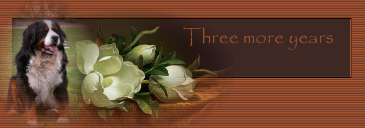
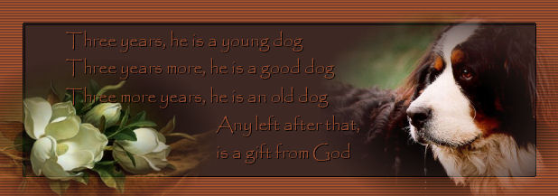

|
|
| 
|
|
Een oud Zwitsers gezegde:  |
|
Allereerst: Waarom die bloemen bij onze Xasha? Die uitleg is vrij eenvoudig. Ik heb op zoek gegaan naar een afbeelding van een Magnolia. Vanaf dat hij op 8 weken bij ons kwam en dat hij vrij rondliep in de tuin konden wij hem vinden onder de Magnolia struik. Hij is daar zijn hele leven telkens terug gaan liggen. Het was een ontzettend koel plekje voor hem. En dat is de reden waarom je zoveel magnolia's op deze site van onze Xashake vindt.
Ons manneke is geboren op 22 april 1998, en is dus nu iets meer dan 7 jaar. We zitten volgens het Zwitserse gezegde aan de derde regel. 26 mei 2005 Einde mei kreeg onze Xasha een heel dikke wang. Het werd maar dikker en dikker. Op 26 mei zijn we dan naar de dierenarts gegaan. Hij had 39,3° koorts. Dus net iets teveel voor een hond. Maar dat merkte je ook aan hem. Hij was zo rustig en deed niets anders dan maar liggen en slapen. Ik had 's middags (toen ik thuiskwam van mijn werk) onmiddellijk naar onze dierenarts gebeld. Ik had geluk, ik mocht onmiddellijk bij hem komen. Onze Xasha had een speekselklier ontsteking. 10 dagen antibiotica en het zou over zijn. En ja, daadwerkelijk ... hij was genezen. We moesten eigenlijk teruggaan naar de dierenarts, maar dat hadden we niet gedaan. Onze Xasha was ook daadwerkelijk genezen.
Weekend van 4 en 5 juni 2005 In het weekend van de 4de en 5de juni begonnen we iets raars te merken aan onze Xasha. Dit waren allemaal vragen die wij ons stelden. Was het komedie van hem? We hadden hem natuurlijk stierlijk verwend en hij wou verder genieten van dat luxe leventje (dachten wij) Maar toch ... in ons achterhoofd ... er was eigenlijk wel iets mis met hem.
Maandag 13 juni 2005 Ik had in de voormiddag geen opdracht te doen en mijn man was in de namiddag vrij. Er was dus de hele dag iemand bij onze Xasha. Wat doen we? Ja natuurlijk ... de hele tijd met onze Xasha bezig zijn. Wanneer piept hij van de pijn en wanneer niet. We konden er geen touw aan vastknopen. Toen ik van een opleiding van Asse thuiskwam belde ik mijn man en vroeg hoe het met Xasha was. Hij kon er nog steeds geen touw aan vastknopen. We beslisten dan om toch maar deze avond naar de dierenarts te gaan. Aan de dierenarts vertelden we wat we allemaal hadden ondervonden de laatste week. Zo kon onze dierenarts, Paul, ook uit onze opmerkingen een beeld vormen van Xasha's probleem. Paul had onze Xasha overal betast en zei toen dat hij toch wel wat gezwellen had. Hij zou een staaltje van een klier nemen uit zijn linkerachterpoot en dat dan onder de microscoop leggen. Paul dacht dat het lymfeklierkanker was en zou ons in de loop van de avond telefoneren. Een uurtje nadat wij thuiskwamen rinkelde de telefoon. Het was Paul. Uit zijn microscopisch onderzoek had hij nog niet veel kunnen maken en het was dus nog niet zeker dat het kanker zou zijn. We zullen nu een week moeten wachten voor de uitslag van het labo. Wij duimen nu heel hard dat het allemaal niet waar is. Paul had ons jaren geleden ook gezegd dat er iets aan de achterpoot van Xasha was en dat daar niets aan te doen zou zijn. Xasha zou verlamd worden aan zijn achterpoten en dat zou pijnlijk zijn en we zouden hem dan moeten laten inslapen. Gelukkig had dat zo geen vaart gelopen. Wij gaven hem melk te drinken, omdat daar toch calcium inzit en dat is goed voor ieders botten. En ja ... zijn poot genas. Hij mankte niet meer. Jean-Paul en ik hopen nu uit de grond van ons hart dat Paul deze keer ook weer ongelijk krijgt, maar eerlijk gezegd, we vrezen ervoor dat hij deze keer wel gelijk gaat krijgen. Paul heeft ons wel verzekerd dat die speekselklierontsteking totaal niks te maken had met hetgeen hij vandaag dacht. Wij begonnen ons natuurlijk al schuldig te voelen omdat wij niet onmiddellijk naar de dierenarts gegaan waren. Maar dit had Paul onmiddellijk ontkracht. We geloofden hem. We houden ons ook vast aan het feit dat toen we naar de dierenkliniek waren geweest, dat die chirurg ons toen onomwonden zei dat Xasha kanker had in zijn mond. Hij had een cyste aan zijn gebit en ook die cyste was toen opgestuurd geworden naar het labo. Het was gewoon een cyste geweest en dus ... geen kanker. Weer was er paniek in huis geweest toen we dat verdict te horen kregen. Er waren weer tranen en paniek, maar het was gelukkig niet waar. Deze avond heeft Xasha bij ons gelegen (zoals elke avond) als wij TV keken. Hij lag rustig op zijn zij en wij streelden hem constant. Toen Xasha wou opstaan, ging er een kreet van pijn door hem heen. Voor ons ging die kreet door merg en been. Maar nadien zat Xasha ons weer aan te kijken met die trouwe grote hondenogen. Nee ... dat kan toch niet, hij kan geen kanker hebben. Paul had ons verteld dat Xasha daar eigenlijk geen pijn van zou hebben. De gezwellen zouden dikker worden en onze Xasha zou lustelozer worden en had minder zin om te eten. Dus ... is het dan toch weer niet die ... vreselijke ziekte. We weten het niet meer. We moeten dus nog een week wachten op het telefoontje van Paul die ons dan hopelijk zegt dat het geen kanker is. We houden ons hart vast, maar in ons diepste binnenste denken we wel dat Paul deze keer wel eens gelijk kan hebben. We wachten de dag van morgen af. Xasha zal alleen in de voormiddag op zichzelf aangewezen zijn, omdat we beiden een opleiding hebben. Namiddag is Jean-Paul thuis en 's avonds ben ik thuis. Als er morgen verandering in zal komen, dan schrijf ik verder. Als het bij het oude blijft (zoals het vandaag is gegaan is) ... dan is er natuurlijk weinig om te schrijven.
Dinsdag 14 juni 2005 Deze morgen waren JP en ik weg, en namiddag was Jean-Paul bij Xasha. Er was geen merkelijke verandering. Het was bijna zoals gisteren. Xasha slaapt 's nachts in de veranda en voor dat hij slapen gaat geven we hem nog een Dentastick van Pedigree (om zijn tanden te poetsen - volgens de reclame), als slaapmutsje zullen we maar zeggen. Deze morgen lag het grootste gedeelte nog op de grond. JP pakte het stuk op en Xasha liep ermee naar buiten. Hij zou het daar wel rustig verder opeten. Niets was minder waar. Weer viel een stuk van zijn snoep op het gras. JP wilt het gaan oprapen en vooraleer Jean-Paul zich gebukt had, begon Xasha nog harder te grommen dan even geleden in de keuken. En raar maar waar, Xasha raapte dan zelf het snoep maar op en liep ermee verder. Uiteindelijk heeft hij het toch opgegeten. In de namiddag heeft Xasha veel geslapen. Deze avond had ik eten gemaakt en wij wilden dat opeten aan de tv. Normaal zou dat niet gaan, want Xasha hangt er met zijn neus boven. Dus niet erg appetijtelijk. We zetten hem dan in de keuken zodat wij rustig kunnen eten. Geloof het of niet, wij konden rustig eten. Xasha bleef liggen. Ik kreeg geen hap door mijn keel. Dit is onze Xasha niet meer. Toen JP gedaan had met eten was Xasha dan toch opgestaan en ik heb hem wat aardappelen en groenten gegeven. Die heeft hij heerlijk opgesmuld. Tot aan het slapen-gaan-ritueel ... hij wilde zijn dentastick niet. Zou de dierenarts gelijk hebben? We hopen nog steeds van niet. Gisteren ben ik vergeten te vertellen dat we ook aan Paul hadden gevraagd om een bloedonderzoek te doen. Maar hij wou wachten tot hij iets meer wist van het microscopisch onderzoek. Als nu toch blijkt dat uit de uitslag van het labo Paul gelijk zou hebben, dan zullen we alsnog vragen om een bloedtest te doen. Iedereen kan zich vergissen ... of niet ??
Maandag 27 juni 2005 De kogel is door de kerk. De dierenarts heeft gebeld. En ja ... we moeten ons gaan voorbereiden op het onvermijdelijke. De onderzoeken van het labo hebben uitgewezen dat de dierenarts gelijk heeft. Ergens diep in ons hart wisten we het wel, maar we wilden het hoegenaamd niet geloven. Maar nu ... Jean-Paul en ik hebben het de laatste weken geregeld over gehad. Ja, we moeten hem ooit afgeven, maar waarom nu al?? Hij is nog maar ietske meer dan 7 jaar bij ons. We hadden toch nog tenminste op 2 jaren gehoopt. Toen we ons Bernertje gingen halen, wisten we dat dit ras geen hoge leeftijd beschoren was. We hoopten toch dat we hem zo'n 9 jaren bij ons zouden kunnen houden. Natuurlijk zelfs liefst nog veel langer. Maar dat zit er bij dit ras niet in. De gemiddelde leeftijd is toch zo'n 8 à 9 jaren. En onze Xasha is er iets meer dan 7. Jean-Paul en ik troosten ons met de gedachte dat er Berners zijn die het geen 7 jaar volhouden. Zijn halfbroer was maar 5 jaar toen hij een hersentumor kreeg. Hoe het met de zijn zussen en broers gesteld is weten we niet. We zullen eens naar de fokker moeten bellen om te horen hoe het met de kinderen van Quella (Xasha's moeder) gesteld is. Moeten we ons zelf verwijten gaan maken? Hebben we genoeg voor hem gezorgd? Wat hebben we verkeerd gedaan? Hadden we het kunnen voorkomen? Zoveel vragen ... zo weinig antwoorden. We weten wel dat wij er meer onder lijden dan Xasha zelf. Hij heeft er geen pijn van. Dat zien we aan zijn ogen, aan zijn gedrag. Eigenlijk weet Xasha zelf van niets. Maar wij zitten met een ferme knoop in onze maag. De voorbije 2 weken heeft Xasha zich gedragen alsof er niets aan de hand was. Hij was vrolijk, hij had pretlichtjes in zijn ogen. Hij was weer ontdeugend en deed weer dingen die hij anders ook deed. Dus ... onze Xasha is niet ziek ... Maar toch ... hij eet heel slecht. Zijn brokken die hij 's morgens krijgt, die blijven al een paar weken in de verpakking staan. Hij moet het niet meer hebben. Dan maar een boterham geven. Hmm dat lukt nog wel. En 's avonds zijn Frolic, die lust hij gelukkig nog. We moeten hem wel ieder brokje in zijn mond steken. Natuurlijk dat dat manneke het enorm plezant vindt. Nou ja, geef hem eens ongelijk: mond open en knabbelen en slikken. Je zou al met minder tevreden zijn. We geven hem nu ook wat hij heel graag heeft: menseneten !!! Dat eet hij met plezier op. Och ja, zo heeft hij toch tenminste nog wat in zijn maag zitten, en zal hij toch niet verhongeren. De dierenarts had ons telefonisch ook gezegd dat we hem maar moesten geven waar hij zin in had. Nee hoor, we verwennen 'ons manneke' niet hoor. Hij heeft het nu al zover gebracht dat hij met ons mee naar boven gaat als wij aan de pc gaan werken. Op de bureau hebben we airco. En met dit weer is dit niet alleen zalig voor ons, maar zelfs super zaaalig voor hem. Tegen hem zeggen dat hij beneden moet blijven? Nee toch, dat kunnen we niet doen. We weten nog niet heel precies hoe de evolutie van zijn ziekte zal zijn. Donderdag of vrijdag gaan we terug naar de dierenarts en misschien toch nog een bloedonderzoek laten doen. We zullen wel horen wat Paul zegt. En we hopen dat Paul ons een beetje gaat begeleiden met hetgeen we nog gaan meemaken met onze Xasha. Dat we weten wat ons nog te wachten staat vooraleer ons Xashake definitief naar de hondenhemel gaat.
Woensdag 20 juli 2005 Ondertussen zijn we toch alweer een dikke maand verder. Xasha heeft ook nog iets aan zijn neus gehad, daarvoor heeft de dierenarts ons weer antibiotica gegeven. 10 dagen moest hij 's morgens en 's avonds een tabletje nemen. En tegelijkertijd moet hij 's morgens een tabletje Medrol 32 slikken. Hij heeft ondertussen al zo'n 18 tabletjes ingenomen en we moeten eerlijk toegeven: onze Xasha eet weer goed, hij is weer goedgehumeurd. Oh ja, dat heerlijke eten ... menseneten ... Ik kook dus nu voor 3 in plaats van voor mijn man en mezelf. Xasha eet ervan of hij die dag nog niks gekregen heeft. En dan te weten dat hij 's morgens zo'n 4 boterhammen achteroverslaat en 's middags doet hij nog eens hetzelfde. Hij krijgt dus hetzelfde als wij. Alleen zijn vlees, daar doe ik geen kruiden op. En natuurlijk heeft hij zijn bak uit vooraleer wij gedaan hebben. En dan zie je die oogjes ... iedere keer als de vork naar onze mond gaat kijkt hij zo intriest. Zo van ... dat kan toch niet ... ik heb honger ... ik wil dat ook hebben ... jullie eten dat toch niet allemaal op ... en weer kan ik niet aan die vragende ogen weerstaan. Een kleine helft van mijn eten gaat dan in zijn bak. En als alles op is ... dan is hij oooooh zo gelukkig. Je ziet de blijdschap in zijn ogen. Hij komt dan naar me toe en wrijft met zijn kop langs mijn arm of komt mij een pootje geven. Alleen al voor die dankbaarheid zou ik zelfs meer dan de helft van mijn eten aan hem geven. Ik zal maar denken, Xasha is gelukkig en ik zal dan maar (noodgedwongen) gaan lijnen. En als mijn man nog niet gedaan heeft met eten, gaat hij langs hem zitten en kijkt ook met diezelfde ogen naar hem En raad eens ... natuurlijk bezwijkt ook hij. En ook Jean-Paul krijgt nadien een dikke poot of Xasha wrijft eens met zijn kop langs mijn man zijn been. Omdat zijn medicijnen op waren, zijn we vandaag terug naar de dierenarts geweest. Paul heeft onze Xasha nog eens onderzocht en vertelde ons dat de gezwellen niet dikker geworden waren. Het is dus bij al het slechte nieuws eigenlijk het beste nieuws wat we konden krijgen. Die Medrol (cortisonen) doet echt zijn werk. We hebben nu 2 voorschriften gekregen. Dat zijn dus 40 tabletten en dan moeten we weer terug naar Paul om weer voorschriften te gaan halen. We hopen zo hard dat we nog dikwijls naar Paul mogen gaan om voorschriften bij te halen. We hebben natuurlijk op het Internet zitten pluizen naar informatie. En overal lezen we eigenlijk hetzelfde: er is geen kans op genezing, het gaat heel snel bergafwaarts, de hond vermagert zienderogen. En als we dan zo lezen op het Internet dan is het steeds ... ja maar ... zo snel evolueert dat toch niet bij onze Xasha. Hij is op die 5 weken zo'n 5 kg afgevallen. Het valt dus toch nog mee. De dierenarts heeft ons vandaag ook nog gezegd dat we gewoon moeten genieten van onze Xasha en dat we hem maar moeten verwennen. Euh ... deden wij dat dan niet?? Paul kent ons, na die jaren, zo goed dat hij ook heel goed weet dat ons 'klein manneke' een super verwend 'junk' is. Het is zo leuk om te zien, dat als alles opgeruimd is in de keuken en ik aanstalten maak om naar boven te gaan, om een beetje te computeren, dan staat Xasha al voor de deur van de gang om met me mee naar boven te gaan. Hij is op dat gebied nog zeeeeer alert. Dat doet er mij aan denken ... enkele dagen geleden zei ik tegen Jean-Paul dat ik nog naar de winkel moest gaan. En een tijdje later zei ik (ik zat nog aan mijn pc): "ik zal nu maar vertrekken". Geloof het of niet ... Xasha veerde recht en keek me met zijn vragende ogen aan ... "mag ik mee?" Die woorden "ik zal nu maar vertrekken" gebruik ik eigenlijk nooit en toch heeft Xasha me verstaan. Als er wordt beweerd dat een hond dom zou zijn, dan hebben wij geen hond :-) Hij weet en verstaat gewoon alles ... euh ... ik moet dat een beetje bijschaven ... hij weet en verstaat alles wat híj wíl verstaan. Als het hem niet aanstaat als we iets vragen of zeggen dat hij moet doen, dan vertikt ie het gewoon en blijft stokstijf staan. Oh ja ... je raadt het al hé ... onze kleine is mee naar de winkel gegaan. Iemand die niet op de hoogte is van Xasha's ziekte ziet niet dat hij eigenlijk ziek is. En dat maakt het voor ons zo moeilijk om zijn ziekte te aanvaarden. Voor ons is hij nog steeds dezelfde lieve schat van een hond en kunnen niet geloven dat zijn dagen geteld zijn. Als hij languit op de grond ligt te slapen dan kan ik gewoon genieten van naar hem te kijken en stilletjes hopen dat hij daar nog maanden mag liggen. Maar het is toch moeilijk om het te aanvaarden. Wanneer er een vervolg aan dit verhaal gebreid wordt, weet ik niet. Ik hoop (en Jean-Paul natuurlijk ook) dat het nog een heeeeeeele tijd mag duren vooraleer ik mijn volgende tekst hier moet neerschrijven.
Vrijdag 12 augustus 2005 Euh ... dat is raar. Onze Xasha mankt. Hij heeft blijkbaar iets aan zijn poot. Of zou het met zijn ziekte te maken hebben? Paul was nog in verlof (hij zou op dinsdag 16 augustus terug uit vakantie komen). Dus we konden niet naar onze dierenarts gaan. Jean-Paul en ik hebben de hele tijd over zijn rechtervoorpoot gewreven. Maar Xasha gaf geen kik. Als we aan de kussentjes van zijn poot kwamen, dan trok hij die poot terug. Oei, hij heeft blijkbaar, tijdens de wandeling, ergens ingetrapt. Het was toch wel een wonde onder zijn poot. Ik heb een brevet van EHBO, dus dan maar eerste hulp toedienen. Ik zat daar op de grond met Isobetadine, een hoop watten en verband. Ik had eerst zijn poot ontsmet en daarna nog extra Isobetadine erop gedaan. Daarna een ontsmet doekje op zijn wonde gelegd en toen het verband rond zijn poot. Oeps ... we hadden weer een probleem. Onze Xasha gaat dat verband zeker verliezen. En daar ging een lichtje bij me branden. Ik had nog sokken liggen van mij. Een iet of wat versleten sok van Pocahontas dan maar over zijn poot doen. En ja hoor ... onze Xasha kon wat beter lopen. En daar liep onze jong met die Pocahontas-sok van mij. Maar ja ... een hond moet ook naar buiten he. Ik heb toen nog een paar sokken van mij gehaald. Hij had dus 4 sokken. Als hij buiten geweest was, en die sok was nat, nou ja dan kreeg hij weer een droge sok. De natte sok werd uitgewassen en te drogen gelegd, zodat we telkens konden verwisselen. Iedere morgen en iedere avond verzorgden wij zijn wonde. En op dinsdag 16 augustus was hij van zijn pijn verlost. Paul heeft de wonde nog bekeken en gezegd dat ik er goed aan had gedaan, om ons manneke zo te verzorgen. We moesten onze dierenarts toch laten kijken wat eraan scheelde. Hij heeft ons toen nog 2 voorschriften van Medrol 32 meegegeven. Dat was weer medicatie voor 40 dagen. Wij waren natuurlijk weer opgelucht.
Zaterdag 20 augustus 2005 Onze Xasha was de hele dag weer zoals altijd. We waren het ondertussen al gewoon. Maar ... 's avonds wilde hij zijn snoepje voor het slapengaan niet meer hebben. En hij bleef ook langer in de tuin dan normaal. We vonden het wel een beetje eigenaardig. Maar ja, als je zo'n ziekte heb, kun je wel eens een slechte dag hebben.
Zondag 21 augustus 2005 Pffff ... onze Xasha was helemaal niet in zijn gewone doen. Hij ging naar buiten en kwam pas na 1,5 uur terug binnen. Hij ging langs het tuinhuisje liggen. Daar had hij zeker zo'n uur gelegen. Maar na veel vijven en zessen was hij toch terug binnengekomen. Hij was toen ook weer dadelijk gaan liggen. We dachten nog steeds dat hij een slechte dag had. In de voormiddag was mijn man de hele tijd bij hem gebleven. In de namiddag bleef ik bij Xasha, zodat mijn man aan zijn PC kon werken. Rond 14.00 uur moest hij opeens naar buiten. Nog voor hij op het gras was, had hij zijn grote behoefte gedaan. Ik dacht dat hem dat dwars zat. Ik heb me toen maar bezig gehouden met naar TV te kijken. Zo kon ik ondertussen toch een oogje in het zeil houden. Ik ben tussen 14.00 uur en 17.00 uur ieder half uur naar buiten gegaan. Xasha wilde niet binnenkomen. Op een gegeven moment vond ik hem onder de rhodendendron. Daar ging hij nooooooit liggen. De schrik sloeg me om het hart. Dat is helemaal niet normaal. Hij wilde ook niet opstaan. Ik liet hem dus maar met rust. Toen ik weer ging kijken, lag hij er nog, maar hij had zich wel verplaatst. Maar nog steeds onder de rhodendendron. Toen ik voor de zoveelste keer naar buiten ging, lag hij op het gras. Ik ben toen naar hem toe gegaan. Je zag dus dat er duidelijk iets mis was. Hij had het ook zo warm en die ogen ... die ogen ... die keken zo intens droevig. Ik ben toen de koortsthermometer gaan halen en zijn koorts gemeten: het was 41,6°. Dus veeeeeeeeel te hoog. Ja ... en van binnenkomen was geen sprake meer. We hebben toen een deken gehaald en hem daarop gerold. Je kunt zo'n gewicht van 55 kg niet maar gewoon opnemen. Jean-Paul en ik hebben hem toen naar binnen gesleept. Pffff ... eindelijk ... hij lag binnen. Het moest natuurlijk weer zondag zijn. Paul was er niet en we kregen een vervangster aan de lijn. Zij vertelde dat we zijn poten moesten koud houden. We moesten natte doeken rond zijn poten doen. Dat deden we dus. Ik heb de koorts toen nog eens gemeten en die was weer gestegen. Hij had nu 41,9°. Opnieuw naar de dierenarts van dienst gebeld. Zij is toen langsgekomen rond 20.00 uur. Ze vertelde ons dat het er echt niet goed uitzag voor hem. Normaal moest zijn tandvlees vuurrood zijn van de koorts, maar bij Xasha was het roze, bijna tegen het wit aan. Ze veronderstelde dat hij een inwendige bloeding had, of dat zijn milt of lever heel erg aangetast zouden zijn. Ze zei dat als we hem zo zouden laten het nog een kwestie van uren zou zijn. Ze zou hem ook een spuitje kunnen geven zodat de koorts zou dalen. Dat hebben we toen toegestaan. Binnen een uurtje zou hij ofwel terug rondlopen, of de inspuiting zou totaal niks uithalen. Het was nog geen 21.00 uur en Xasha probeerde op te staan. Dus ... voor ons ging het de goede richting uit. Om 21.10 uur zijn we naar boven gegaan, omdat we nog werk aan de pc hadden. Xasha lag heel rustig op de grond. Om 21.30 uur gingen we naar beneden. We hoorden een zucht toen we van de trap kwamen. Toen we beneden waren ... Xasha ademde niet meer. Hij lag daar heel rustig. Ons klein manneke was overleden. Wat hebben we onszelf toch verwijten gemaakt op dat ogenblik. We hadden bij hem moeten zijn op dat ogenblik. We waren net een paar seconden te laat. Een gevoel dat niet snel overgaat hoor. Dat verzeker ik je. We hebben toen ook Paul gebeld (het maakte ons niks uit als we hem uit zijn bed moesten halen). We dachten al dat zijn vervangster hem een inspuiting had gegeven om in te slapen. Dat was natuurlijk niet waar. Paul was ondertussen ook al op de hoogte gesteld door zijn vervangster en wist welke inspuiting onze Xasha gekregen had. Ons klein manneke heeft een hartstilstand gehad. Zijn hart kon het niet meer aan. Hij is ingeslapen zonder dat hij het wist. Dat zag je aan zijn houding. Het was geen verkrampte houding. Het was een houding die hij altijd had, als hij sliep. We hebben nog tot 05.30 uur bij hem gezeten, gebabbeld en heel hard geweend. Ik heb zijn hoofd nog op mijn schoot genomen en ik heb hem gestreeld en gestreeld en gestreeld. Ik denk dat alles wat we hem wilden vertellen, dat we dat gedaan hebben. Ik heb een dekentje over hem gelegd en we zijn tegen 05.45 uur in ons bed gekropen. Hoe erg het ook was. Ik had maandag 2 vergaderingen en mijn man had ook nog een bespreking. Het leven ging gewoon door. Toen ik in de late namiddag thuiskwam hebben we beiden voorgoed afscheid van ons klein Xashake genomen. Hij was zelfs zo lief dat hij voor ons de beslissing genomen had om naar de hondenhemel te gaan. Wij hebben die harde beslissing niet moeten nemen. september 2005 Het is zo stil in huis. Geen gehijg meer, geen geblaf meer, geen vuile poten meer in huis. We gaan nu heel mooie foto's van onze Xasha zoeken en die overal zetten. Helpt dat ons verdriet verzachten of net niet? We zullen wel zien. De tijd heelt alle wonden. Maar deze wonden zijn nog steeds zo ontzettend vers. Je mist dieje kleine op ieder moment van de dag. Een nieuwe hond aanschaffen? De mensen die ons steunen zijn in 2 kampen verdeeld (als ik het zo oneerbiedig mag zeggen), de ene helft zegt: schaf je een nieuwe hond aan, de andere helft zegt: wacht nog een hele tijd. Probeer nu van de tijd te genieten dat je met jullie 2 zijn. Jullie hebben 7 jaar en 4 maanden voor die kleine jongen gezorgd. Jullie hebben alles voor hem gedaan, nooit op vakantie geweest, altijd met hem rekening gehouden. Nu is het nog steeds te vroeg om een besluit te nemen. We missen hem nog steeds zo hard. Op 1 dag na was hij 7 jaar en 4 maanden geworden. Kleine, lieve Xasha, met je trouwe donkerbruine hondenogen, bedankt voor alles wat je voor ons gedaan hebt.
|
|
|
Gelieve niets van deze website over te nemen of te claimen als je eigen.
Al deze teksten zijn © van mezelf, of zijn hier geplaatst met toestemming van de schrijver.
Laatst bijgewerkt op
september 2005
Webdesign en mail to: Hedera Design